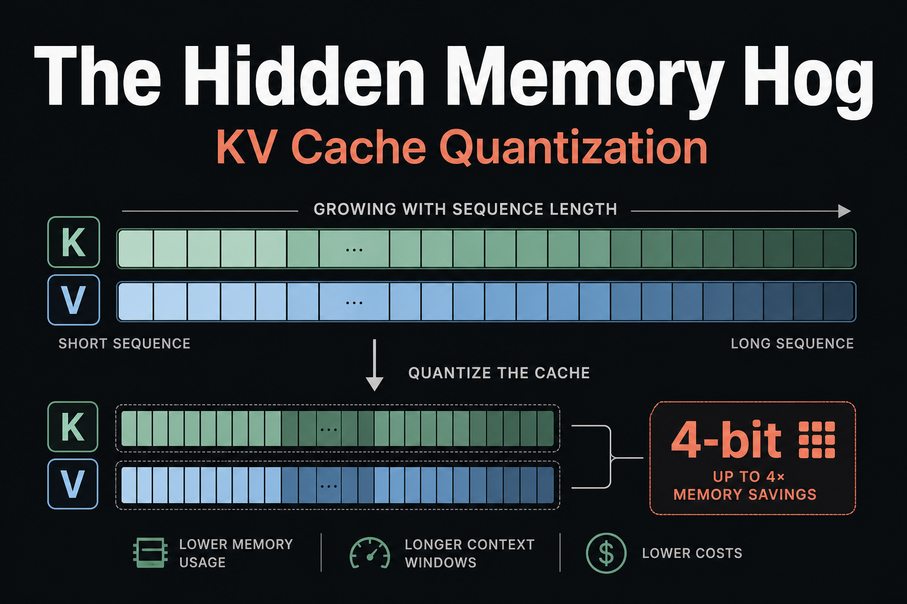
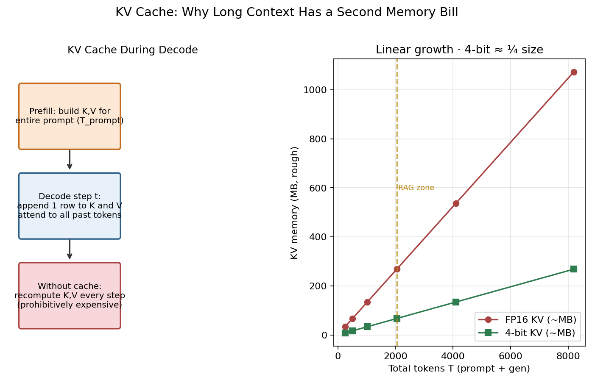
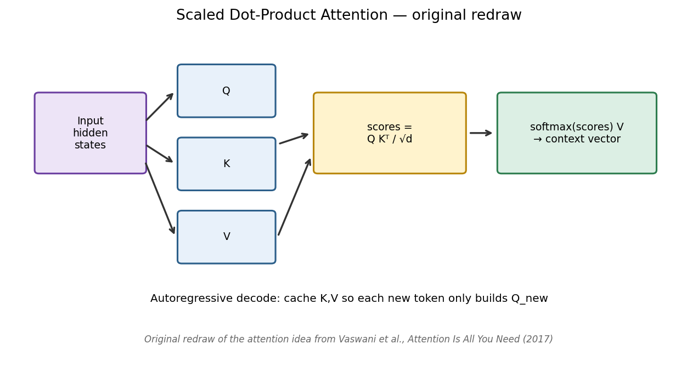
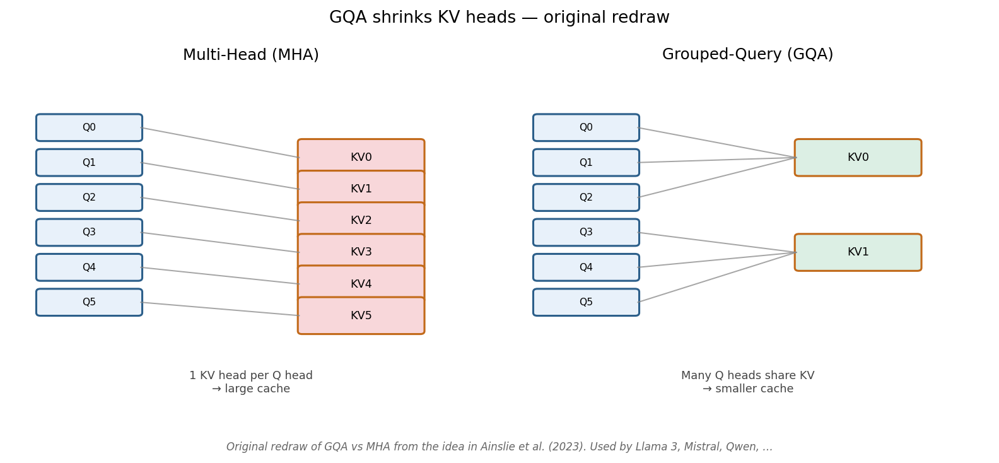
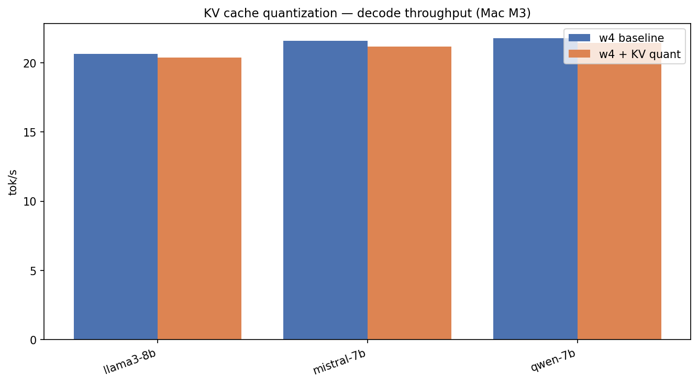
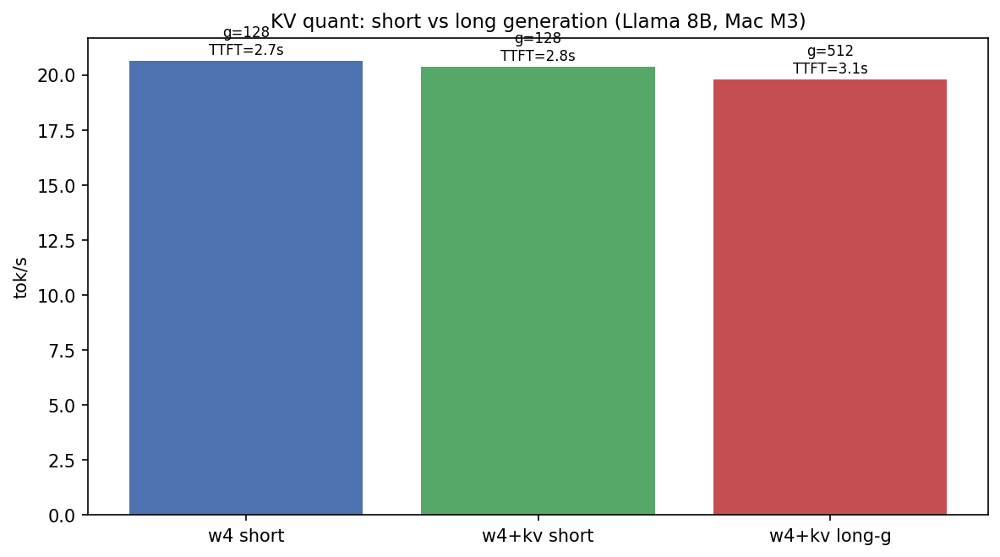
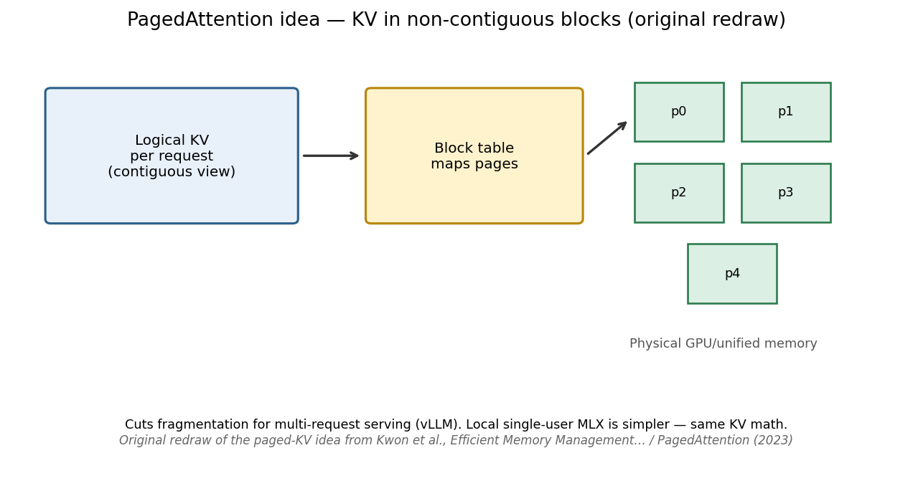

Local LLMs on Apple Silicon — Part 3 of 7
The Hidden Memory Hog: KV Cache Quantization
Why short benches look boring — and when 4-bit KV actually saves you
UPLOAD THIS IMAGE IN MEDIUM
../images/thumbnails/thumb_02_kv_cache.png
Weight quantization gets the spotlight.
Once generation starts, something else grows: the KV cache — keys and values for every token in context.
For short chats it barely shows up in tok/s. For RAG, it’s the second memory bill.
How the cache works
UPLOAD THIS IMAGE IN MEDIUM
../images/workflows/02_kv_cache_workflow.png
UPLOAD THIS IMAGE IN MEDIUM
../images/papers/vaswani_attention_redraw.png
UPLOAD THIS IMAGE IN MEDIUM
../images/papers/pope_kv_scaling_redraw.png
GQA: shrink heads before you quantize
UPLOAD THIS IMAGE IN MEDIUM
../images/papers/ainslie_gqa_redraw.png
Llama 3, Mistral, and Qwen already cut KV heads with GQA. 4-bit KV stacks on top of that.
Why our short-context bench “does nothing”
At 512 prompt + 128 gen on Mac M3:
- Llama 8B: 20.7 → 20.4 tok/s
- Mistral 7B: 21.6 → 21.2
- Qwen 7B: 21.8 → 21.4
UPLOAD THIS IMAGE IN MEDIUM
../images/02_kv_cache_compare.png
UPLOAD THIS IMAGE IN MEDIUM
../images/02_kv_long_generation.png
The win appears at long context, multi-session serving, or tight RAM — not in a 640-token microbench.
UPLOAD THIS IMAGE IN MEDIUM
../images/07_context_dual_axis.png
UPLOAD THIS IMAGE IN MEDIUM
../images/papers/kwon_paged_attention_redraw.png
When to enable it
- Always quantize weights first (w4)
- Turn on KV quant for >2K context or RAG
- Prefer GQA models
./scripts/run_article.sh 2 "Mac M3"
← Part 2 · Next → Part 4: Prefill & TTFT